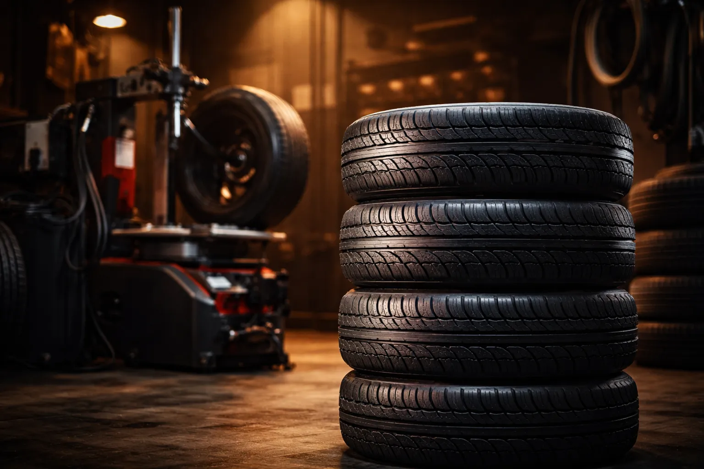
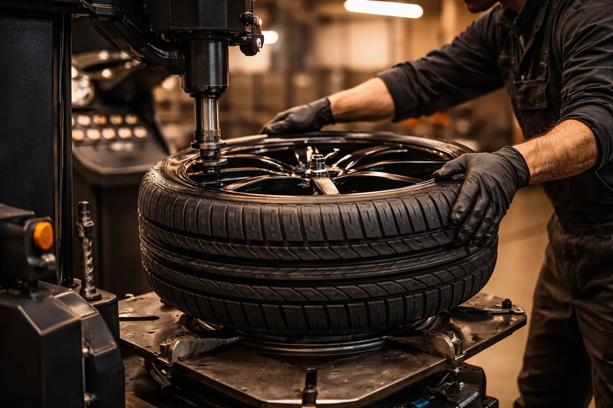

Vente, montage et équilibrage de pneus pour voitures et utilitaires. Ali-Ka, votre spécialiste pneus à Etterbeek depuis plus de 22 ans.

Vos pneus, c'est le seul contact entre votre voiture et la route. Quatre rectangles de la taille d'une carte postale. Autant dire que leur état n'est pas un détail — et c'est exactement pour ça qu'Ali-Ka, Avenue des Casernes 10 à Etterbeek, s'en occupe avec sérieux depuis plus de 22 ans.
On connaît les pneus. Vraiment. Permutation saisonnière, montage complet, équilibrage — tout passe entre nos mains. Les automobilistes d'Etterbeek, d'Ixelles, de Schaerbeek et des communes voisines le savent : chez nous, le conseil est franc et le travail est bien fait. Michelin, Bridgestone, Continental, Goodyear, Hankook, mais aussi des marques plus économiques qui tiennent la route sans vider le portefeuille. On trouve toujours la bonne gomme pour votre voiture et votre budget.
En dessous de 7 °C, un pneu été devient dur comme du plastique. Il freine moins bien. Il accroche moins dans les virages. Sur l'Avenue de Tervueren mouillée ou les pavés autour du Cinquantenaire, c'est un vrai problème.
C'est pourquoi chez Ali-Ka à Etterbeek, on vous dit les choses clairement : entre octobre et mars, montez des pneus hiver. On s'occupe du changement rapidement pour ne pas bloquer votre journée, et on vous conseille sur le modèle qui correspond à votre conduite. La loi belge fixe la profondeur minimale de sculpture à 1,6 mm — c'est un strict minimum, comme le rappelle Test-Achats. Nous, on préfère vous alerter bien avant.
Et quand les beaux jours reviennent ? Des pneus été bien choisis vous offrent une adhérence solide sur chaussée sèche et mouillée, tout en réduisant l'usure et la consommation de carburant. Vous roulez peu et cherchez la simplicité ? Les pneus 4 saisons restent une option valable pour Bruxelles.
Un chiffre à retenir : selon l'AWSR, le risque d'aquaplaning grimpe en flèche sous les 2 mm de profondeur de sculpture — bien avant la limite légale. Chez Ali-Ka, on vérifie ça à chaque passage et on vous prévient quand il est temps d'agir.
Un pneu mal équilibré, ça vibre. Ça use vos suspensions. Ça raccourcit la durée de vie de la gomme. Bref, c'est de l'argent perdu.
Chez Ali-Ka, chaque montage inclut un équilibrage soigné, le remplacement des valves et un contrôle de pression calé sur les recommandations du constructeur. Pas de raccourci, pas d'à-peu-près. Que vous veniez de la Gare d'Etterbeek, du quartier de la Place Jourdan ou de Woluwe-Saint-Lambert, l'atelier est facile d'accès et vous pouvez attendre sur place dans un espace confortable le temps qu'on s'occupe de votre voiture.
Vous roulez en utilitaire ou camionnette ? On a ce qu'il faut : des pneus renforcés pensés pour les charges lourdes, montés rapidement pour que votre véhicule pro ne reste pas immobilisé. Les artisans et commerçants d'Etterbeek et du quartier européen comptent sur nous depuis des années.
Un dernier conseil : après un montage, faites contrôler votre direction et suspension pour garantir une usure homogène et une tenue de route irréprochable. Tant qu'on y est, jetez un oeil à vos freins — la sécurité, c'est un tout. Ali-Ka s'occupe aussi de la vidange et de l'entretien automobile complet.
Le prix du montage de pneus chez Ali-Ka à Etterbeek varie selon la taille et le type de pneu. Nous proposons des tarifs compétitifs incluant le montage, l'équilibrage et la valve. Appelez le 02 647 47 01 pour un devis précis adapté à votre véhicule.
À Etterbeek et en région bruxelloise, il est recommandé de monter vos pneus hiver entre octobre et mars, lorsque les températures descendent régulièrement sous 7°C. Ali-Ka vous accueille Avenue des Casernes pour un changement rapide et professionnel.
Oui, Ali-Ka à Etterbeek propose une large gamme de pneus pour utilitaires et camionnettes, en plus des pneus pour voitures particulières. Nous assurons le montage et l'équilibrage pour tous types de véhicules.
Chez Ali-Ka à Etterbeek, le rendez-vous n'est pas obligatoire pour un changement de pneus. Nous acceptons les clients sans rendez-vous du lundi au vendredi de 9h à 18h et le samedi de 9h à 14h. En période de pointe saisonnière, nous recommandons d'appeler au 02 647 47 01.
Contactez-nous directement au 02 647 47 01 pour connaître nos disponibilités en matière de stockage de pneus. Nous proposons des solutions adaptées aux clients d'Etterbeek et des communes voisines.
Les pneus hiver ne sont pas obligatoires en Belgique, mais ils offrent un freinage nettement supérieur en dessous de 7 °C. Les pneus 4 saisons sont un compromis acceptable pour une conduite urbaine à Bruxelles avec moins de 15 000 km par an. Chez Ali-Ka à Etterbeek, nous vous conseillons la solution la plus adaptée à votre usage et réalisons le montage et l'équilibrage de tous types de pneus.